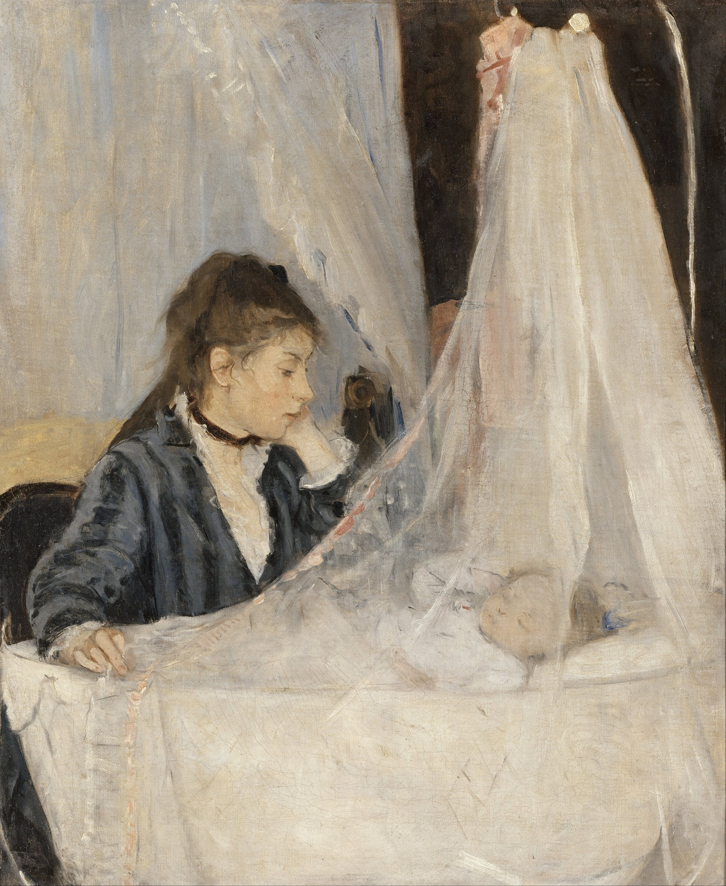

One hand lifts the gauze; one diagonal stitches two breaths together.
Mother’s gaze and bent arm meet the child’s arm and the veil. Dark and awake on the left; pale and asleep on the right.
Cool grey gauze, warm cream bedding, muted rose skin. A graphite sleeve anchors the pale field.
The brightest notes sit on fabric, not the face. Diffused light makes intimacy feel restrained.
Quick pale strokes do not describe every thread. Transparency comes from coverage and omission; the child’s face and hand tighten while fabric stays open.
Fact: The sitters are Morisot’s sister Edma and her daughter Blanche. Painted in 1872, the work appeared at the first Impressionist exhibition in 1874; Morisot was the first woman to exhibit with the group.
Interpretation: love appears as attention, not action.
No embrace or exchanged gaze. The veil shelters the child and keeps us outside. Simply remaining nearby acquires a visible form.
Berthe Morisot, The Cradle, 1872, oil on canvas, 56 × 46.5 cm; Musée d’Orsay, Paris, RF 2849. High-resolution image: Wikimedia Commons, marked Public Domain; verify jurisdictional terms at source. Image rights belong to the original creator and applicable rights holders. Analysis: Daily Art. Colours are editorial approximations, not conservation measurements.